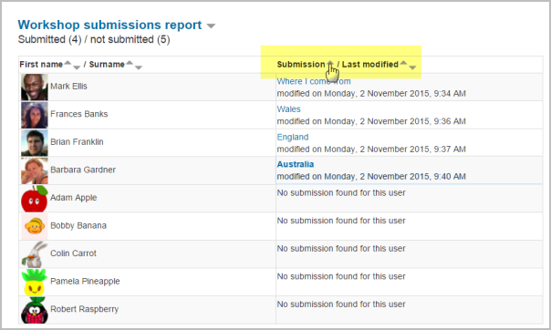

Tutorial menggunakan Workshop
1. Alur kerja
Untuk lokakarya modul dapat dipandang sebagai memiliki lima fase. Kegiatan lokakarya khas dapat mencakup beberapa hari atau bahkan berminggu-minggu. Guru switch aktivitas dari fase satu sama lain. Lokakarya khas mengikuti jalan yang lurus dari Setup untuk, penyerahan, penilaian, Grading evaluasi, dan berakhir dengan tertutup dihapus. Namun, jalur lanjutan rekursif juga mungkin. Perkembangan aktivitas divisualisasikan dalam apa yang disebut lokakarya perencana alat. Ini menampilkan semua tahap lokakarya dan menyoroti satu saat ini. Ini juga berisi semua tugas-tugas pengguna memiliki dalam tahap saat ini dengan informasi apakah tugas selesai atau belum selesai atau bahkan gagal.
2. Fase setup
Pada fase awal ini, peserta Workshop tidak bisa melakukan apa-apa (tidak memodifikasi mereka pengiriman atau penilaian mereka). Kursus fasilitator menggunakan tahap ini untuk mengubah pengaturan lokakarya, memodifikasi penilaian strategi tweak penilaian bentuk. Anda dapat beralih ke fase ini sewaktu-waktu Anda perlu mengubah pengaturan lokakarya dan mencegah pengguna memodifikasi pekerjaan mereka.
3. Tahap penyampaian
Pada tahap penyampaian, peserta Workshop menyerahkan pekerjaan mereka. Akses kontrol tanggal dapat diatur sehingga bahkan jika lokakarya dalam fasa ini, mengirimkan dibatasi untuk jangka waktu tertentu saja. Penyerahan mulai tanggal (dan waktu), tanggal penyerahan akhir (dan waktu) atau keduanya dapat ditentukan. Fitur baru di Moodle 3.0!
Laporan submisions lokakarya memungkinkan guru untuk melihat yang telah diajukan dan yang telah tidak, dan filter dengan penyerahan dan terakhir diubah:
